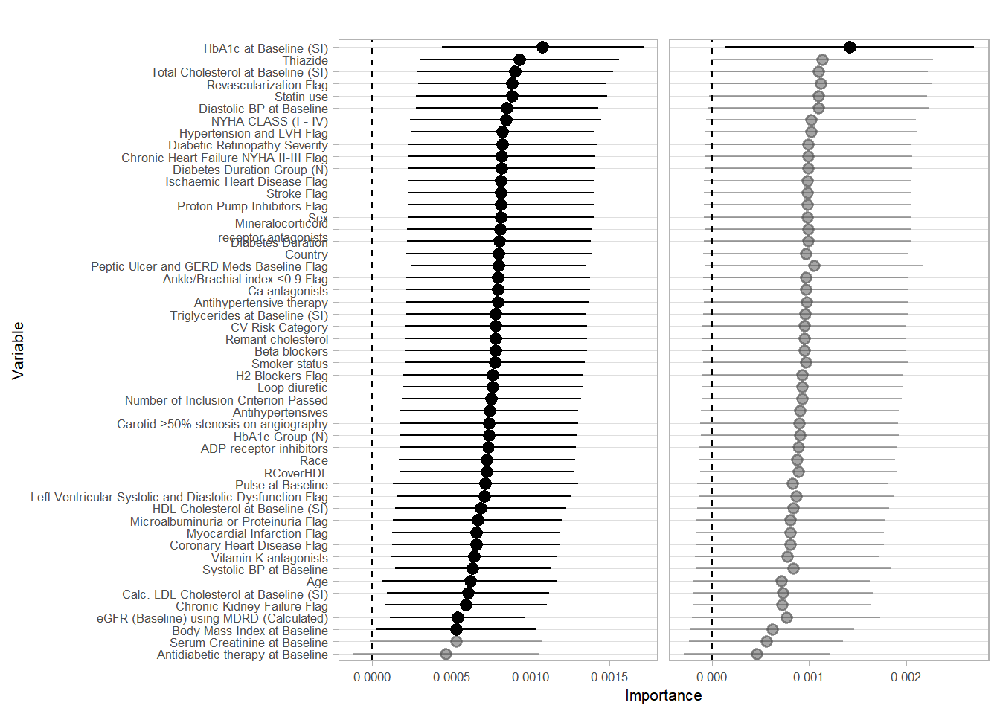

Primary outcome: diabetes progression
- Binary indicator of whether any of the following occurred within the first t=2 years of follow up.
- insulin initiation
- adding glucose-lowering drugs
- hyperglycemia
- hypoglycemia
- acid-base disorders
Methods, Simulations results, and Example Analysis with LEADER Trial Data
Cardiovascular disease (CVD) remains the leading cause of morbidity and mortality worldwide, accounting for over 17 million deaths each year according to the World Health Organization. Dyslipidemia is a major risk factor for CVD, and statins are among the most commonly prescribed medications for treating it. Statins have been shown to reduce the incidence of CVD events and improve patient outcomes. However, despite their benefits, statins have been associated with an increased risk of developing type 2 diabetes (T2D).
While the mechanisms underlying the increased risk of T2D associated with statin use remain unclear, recent evidence suggests that glucagon-like peptide-1 receptor agonists (GLP-1RAs), a class of medications used in the treatment of T2D, may mitigate the risk of T2D associated with statin use. GLP-1RAs exert their effects through the incretin system, which plays a role in regulating glucose metabolism and insulin secretion. The incretin system is also involved in the regulation of lipid metabolism, and GLP-1RAs have been shown to improve lipid profiles in patients with T2D. However, the effect of GLP-1RA initiation on statin-associated CVD risk remains unclear.
In this study, we aim to investigate the treatment effect heterogeneity of statin use on CVD risk, with a focus on the effect modification of GLP-1RA initiation. We will use data from the Liraglutide Effect and Action in Diabetes: Evaluation of Cardiovascular Outcome Results (LEADER) trial, a large randomized controlled trial of patients with T2D and high cardiovascular risk, to address this question. We will apply targeted maximum likelihood estimation to estimate the variable importance measure (VIM) of statin use on CVD risk. The VIM provides a measure of the importance of a variable in predicting the outcome of interest, and can be used to identify subgroups of patients who may benefit from a particular treatment.
We will also investigate whether GLP-1RA initiation modifies the effect of statin use on CVD risk. This is important because if GLP-1RAs can reduce the risk of CVD associated with statin use, it would have important implications for the clinical management of dyslipidemia and CVD prevention. Our findings may also help to inform personalized treatment strategies for patients with T2D and high cardiovascular risk.
“Heterogeneous treatment effect is an important measure for understanding how a commercial product or medical treatment affects different subgroups in a population. Beyond the overall impact reflected by the average treatment effect, the analysis of treatment effect heterogeneity further reveals details on the importance of different covariates and their relations to the outcome. A fundamental parameter on heterogeneity is the variance of treatment effect. Based on that, people defined the treatment effect variable importance parameters, which measures the heterogeneity explained by a subset of covariates of interest. In this article, we propose a new targeted maximum likelihood estimator for a treatment effect variable importance measure. This estimator is a pure plug-in estimator that consists of two steps: 1) the initial estimation of relevant components to plug in and 2) an iterative updating step to optimize the bias-variance tradeoff. The simulation results show that this TMLE estimator has competative performance in terms of lower bias and higher coverage compared to the simple substitution estimator and the estimating equation estimator.”
Methods for the study of treatment effect heterogeneity is an active area of research in causal inference and statistics, and includes the estimation of conditional average treatment effects (CATE).
Existing hypothesis tests and estimating approaches on CATE include nearest-neighbor matching, kernel methods, series estimation, and forest-based methods.
One recent tranche of literature has recommended variance of treatment effect (VTE) as a global measure of treatment effect heterogeneity given a set of baseline covariates (Levy et al 2019).
The previous work on how to utilize these CATE estimates mainly focus on policy learning and optimal dynamic treatment rule (OTR), where people try to make personalized recommendation based on individual-level characteristics.
Later in 2022, Oliver Hines emphasized the importance of shifting the attention from policy learning to addressing the question of “what are the key drivers of treatment effect heterogeneity?”, and discussed on how to quantify the importance of variable subsets in determining the CATE.
Methods have been proposed to estimate treatment effect variable importance (TE-VIMs) through the contribution of groups of baseline covariates towards the VTE.
These methods require estimation of a mean outcome (binary or continuous) given treatment and covariates, which may be estimated using flexible data-adaptive/ machine learning methods.
Highly adaptive lasso (HAL).
Note the primary outcome drops all subjects on insulin at baseline. We will also use an alternative composite outcome using insulin intensification
| Baseline | New initiation |
|---|---|
| No insulin treatment | Any insulin |
| Long acting | Premix or short acting |
| Intermediate acting | Premix or short acting |
COMMENT: these haven’t been run yet, right? What is CV and A1C?
After initial data cleaning process, the full dataset includes 9339 observations with 54 columns. For the analytic dataset using the primary outcome definition, 5170 observations who were on insulin use at the basedline are dropped from the data. In addition, 181 people who were censored/died before t (2 years) are also dropped. We impute the missing values by median and mode respectively for continuous and discrete covariates, and create missingness indicator columns. The finalized analytic dataset has 3988 rows and 63 columns.
COMMENT: Get N’s for all outcomes
355 people censored before 24 months are dropped.355 people censored before 24 months are dropped.355 people censored before 24 months are dropped.355 people censored before 24 months are dropped.-tabulate outcome -both components and number of diabetes intensification outcomes
-tabulate number of people dropped in different analyses
-tabulate statins and other medication usages
[1] "Diabetes intensification: 3474/8984 (38.67%)"[1] "Diabetes intensification (insulin initiation definition): 661/3988 (16.57%)"[1] "Cardiovascular event: 467/8984 (5.2%)"[1] "HbA1c: 1/8967 (0.01%)"Insignificant variance of the treatment effect on diabetes intensification:
Variance of the treatment effect of secondary outcomes:
COMMENT: Why is the CV VTE 0?
COMMENT: Format plot sizes, split/discuss by outcomes

https://www.overleaf.com/project/63e061cf03b08e985e4d9d1f
355 people censored before 24 months are dropped.
================================================================
Statistic N Mean St. Dev. Min Max
----------------------------------------------------------------
A 3,988 0.489 0.500 0 1
AGE 3,987 64.388 7.120 50 88
DIABDUR 3,982 15.309 7.989 0.100 61.000
INCPASSN 3,988 4.995 0.067 4 5
BMIBL 3,985 32.869 6.289 18.000 81.000
PULSEBL 3,988 72.746 11.392 35 172
SYSBPBL 3,988 136.121 18.287 72.500 227.000
DIABPBL 3,988 76.078 10.332 38.500 127.000
HBA1CBL 3,988 8.875 1.557 5.100 18.500
HDL1BL 3,922 1.168 0.319 0.080 3.320
LDL1BL 3,922 2.291 0.919 0.200 8.230
CHOL1BL 3,922 4.341 1.125 1.810 12.580
RC 3,922 0.883 0.539 -0.910 11.030
RCoverHDL 3,922 0.867 0.765 -0.820 14.707
TRIG1BL 3,922 2.027 1.516 0.360 36.090
CREATBL 3,988 90.497 41.846 20 726
EGFMDRBC 3,988 77.936 27.964 6.800 418.500
HBA1CGRN 3,988 1.551 0.497 1 2
DDURGRN 3,982 1.668 0.471 1 2
Y 3,988 0.341 0.474 0 1
SEX.F 3,988 0.384 0.486 0 1
SEX.M 3,988 0.616 0.486 0 1
RACE.ASIAN 3,988 0.099 0.298 0 1
RACE.BLACK 3,988 0.097 0.296 0 1
RACE.OTHER 3,988 0.039 0.194 0 1
RACE.WHITE 3,988 0.766 0.424 0 1
COUNTRY.Africa 3,988 0.035 0.183 0 1
COUNTRY.America 3,988 0.467 0.499 0 1
COUNTRY.Asia 3,988 0.162 0.369 0 1
COUNTRY.Europe 3,988 0.305 0.461 0 1
COUNTRY.Pacific 3,988 0.031 0.174 0 1
SMOKER.CURRENT.SMOKER 3,988 0.115 0.319 0 1
SMOKER.NEVER.SMOKED 3,988 0.418 0.493 0 1
SMOKER.PREVIOUS.SMOKER 3,988 0.466 0.499 0 1
NYHACLAS.NYHA.CLAS.NA 3,988 0.831 0.375 0 1
NYHACLAS.NYHA.CLASS.I 3,988 0.035 0.185 0 1
NYHACLAS.NYHA.CLASS.II 3,988 0.113 0.316 0 1
NYHACLAS.NYHA.CLASS.III 3,988 0.021 0.144 0 1
ANTDBFL...1.OADs 3,988 0.000 0.000 0 0
ANTDBFL.1.OAD 3,988 0.000 0.000 0 0
ANTDBFL.Insulin.OAD 3,988 0.172 0.377 0 1
ANTDBFL.Insulin.OAD.s. 3,988 0.828 0.377 0 1
ANTDBFL.None 3,988 0.000 0.000 0 0
AHYPERFL.FALSE 3,988 0.908 0.289 0 1
AHYPERFL.TRUE 3,988 0.092 0.289 0 1
RETINSEV.no.retinopathy 3,988 0.017 0.130 0 1
RETINSEV.non.proliferative 3,988 0.198 0.399 0 1
RETINSEV.proliferative 3,988 0.076 0.265 0 1
RETINSEV.retinsev.NA 3,988 0.709 0.454 0 1
GERDBLFL.FALSE 3,988 0.553 0.497 0 1
GERDBLFL.TRUE 3,988 0.447 0.497 0 1
PPIFL.FALSE 3,988 0.769 0.422 0 1
PPIFL.TRUE 3,988 0.231 0.422 0 1
H2BLFL.FALSE 3,988 0.962 0.192 0 1
H2BLFL.TRUE 3,988 0.038 0.192 0 1
MIFL.FALSE 3,988 0.690 0.463 0 1
MIFL.TRUE 3,988 0.310 0.463 0 1
STROKEFL.FALSE 3,988 0.828 0.377 0 1
STROKEFL.TRUE 3,988 0.172 0.377 0 1
REVASFL.FALSE 3,988 0.589 0.492 0 1
REVASFL.TRUE 3,988 0.411 0.492 0 1
STENFL.FALSE 3,988 0.739 0.439 0 1
STENFL.TRUE 3,988 0.261 0.439 0 1
CHDFL.FALSE 3,988 0.911 0.285 0 1
CHDFL.TRUE 3,988 0.089 0.285 0 1
IHDFL.FALSE 3,988 0.742 0.437 0 1
IHDFL.TRUE 3,988 0.258 0.437 0 1
CHFFL.FALSE 3,988 0.866 0.341 0 1
CHFFL.TRUE 3,988 0.134 0.341 0 1
KIDFL.FALSE 3,988 0.709 0.454 0 1
KIDFL.TRUE 3,988 0.291 0.454 0 1
MICFL.FALSE 3,988 0.715 0.452 0 1
MICFL.TRUE 3,988 0.285 0.452 0 1
HYPFL.FALSE 3,988 0.763 0.425 0 1
HYPFL.TRUE 3,988 0.237 0.425 0 1
LVSDFL.FALSE 3,988 0.771 0.420 0 1
LVSDFL.TRUE 3,988 0.229 0.420 0 1
PADFL.FALSE 3,988 0.864 0.343 0 1
PADFL.TRUE 3,988 0.136 0.343 0 1
CVRISK.High 3,988 0.830 0.376 0 1
CVRISK.Medium 3,988 0.170 0.376 0 1
statin_use.FALSE 3,988 0.246 0.431 0 1
statin_use.TRUE 3,988 0.754 0.431 0 1
antihypertensives.FALSE 3,988 0.173 0.378 0 1
antihypertensives.TRUE 3,988 0.827 0.378 0 1
betab.FALSE 3,988 0.428 0.495 0 1
betab.TRUE 3,988 0.572 0.495 0 1
minera.FALSE 3,988 0.938 0.242 0 1
minera.TRUE 3,988 0.062 0.242 0 1
adp.FALSE 3,988 0.263 0.440 0 1
adp.TRUE 3,988 0.737 0.440 0 1
vkantag.FALSE 3,988 0.938 0.242 0 1
vkantag.TRUE 3,988 0.062 0.242 0 1
caantag.FALSE 3,988 0.659 0.474 0 1
caantag.TRUE 3,988 0.341 0.474 0 1
thiazide.FALSE 3,988 0.812 0.390 0 1
thiazide.TRUE 3,988 0.188 0.390 0 1
loopdiur.FALSE 3,988 0.789 0.408 0 1
loopdiur.TRUE 3,988 0.211 0.408 0 1
----------------------------------------------------------------Insignificant variance of the treatment effect on diabetes intensification:
Variance of the treatment effect of secondary outcomes: